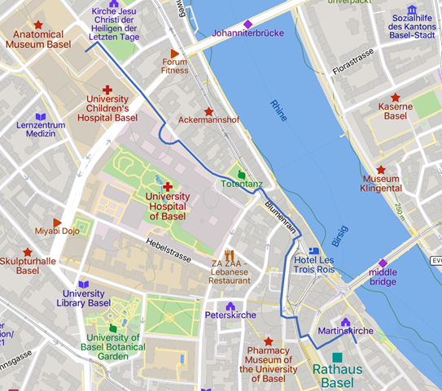

An informal Apero with the opportunity to network and taste wine will take place at the conference venue on Monday, September 4, 18:00 – 20:00.
The reception will take place at the city archives behind the parliament building (Rathaus). The address is Martinsgasse 2.
See the map below for information on how to get there from the
conference venue. It’s approximately a 20-minute walk.

© OpenStreetMap, Mapbox and Mapcarta
Departure: We will depart in buses from the conference venue to the Vitra Campus in Weil am Rhein (Germany) at 15:00. Bus transfer is only for registered participants. If you want to go to the Vitra Campus by yourself, you can find a travel description at this link. In this case, please make sure that you arrive at Vitra before 15:30.
Walk: We will walk the Rehberger-Weg. The Rehberger-Weg, which is around five kilometers long, links two countries, two municipalities, two cultural institutions – and countless stories. The path runs between Weil am Rhein and Riehen, between the Vitra Campus and the Fondation Beyeler. The wine harvest will be on the way during our hike, so please refrain from entering the vineyards or picking any grapes. The walk will end at the restaurant of the conference dinner.
Equipment: During the walks the national border is crossed.
Please carry an identity card, a water bottle and wear sturdy
shoes! We recommend that you download the Multimedia Guide “24
Stops” on your mobile which is available on Google
Play (for Android devices) and on the Apple App
store.
The conference dinner is at the Restaurant Landgasthof Riehen, Baselstrasse 38, 4125 Riehen (google maps link).
If you do not join the conference excursion, you can reach the restaurant via Tram 6 (direction “Riehen Grenze”) from several central locations in Basel (e.g. Barfüsserplatz, Marktplatz, Claraplatz, or Messe; departures every 8 minutes) in 15-25 minutes. Depart from the tram at “Riehen Dorf” and walk for 80 meters (the restaurant is on the same street as the tramline).
To return to your hotel after the conference dinner, you can again
use Tram 6 (from tram stop “Riehen Dorf”, direction “Allschwil Dorf”).
The tram stop is close to the restaurant and trams run every 8 minutes
until 22:59 and thereafter every 15 minutes. It stops at several central
locations in Basel.